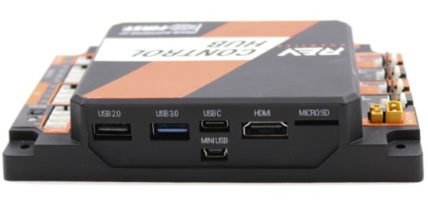
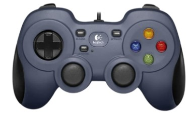

Before you write a single line of code, it helps to understand what you are actually building. An FTC robot is not one thing — it's a system of parts that work together. This lesson walks through every major piece, how a match works, and where you fit in as the programmer.
No coding in this lesson — just read, explore, and take notes. By the end, you'll understand what's inside the robot, what the driver sees, how a match is structured, and why your code matters.
An FTC robot is roughly the size of a milk crate — the maximum allowed dimensions are 18 × 18 × 18 inches at the start of a match. That's small! Teams have to be creative about fitting everything into that space. Some robots expand after the match begins, but they all start inside that cube.
FTC robots must fit inside an 18 × 18 × 18 inch cube at the start of every match. Planning how everything fits is a big part of the design challenge.
Most FTC teams do not machine their own parts from raw metal. Instead, they use pre-fabricated building systems — kits of aluminum channels, brackets, gears, and plates that bolt together like high-tech building blocks. Popular systems include goBILDA, REV Robotics, Actobotics, and Tetrix.

Students use wrenches, hex keys, and screwdrivers to bolt these parts into a custom robot. You pick the channels, cut them to length if needed, and assemble the frame, drivetrain, and mechanisms. It's hands-on engineering — no welding or machining required.

If you've ever built something from LEGO Technic or an Erector set, FTC building systems work on the same idea — just bigger, stronger, and made of aluminum.
Open up any FTC robot and you'll find a handful of key electronics. Think of these as the robot's brain, nervous system, and power supply.
The Control Hub is the brain of the robot. It's a small rectangular box (made by REV Robotics) that runs the Android operating system and executes your Java code. It has a processor that runs your program, Wi-Fi to talk to the Driver Hub, four motor ports, six servo ports, sensor ports, and a built-in IMU (gyroscope + accelerometer). When you click START on the Driver Hub, the Control Hub begins running your code — every motor command, every sensor reading, every decision your robot makes happens here.
The Control Hub is the robot's brain. It runs your Java code, reads sensors, and controls motors and servos.

Four motor ports is often not enough — a typical robot might have four drive motors, an intake motor, and a shooter motor already, that's six. The Expansion Hub gives you four more motor ports, six more servo ports, and additional sensor ports. It connects to the Control Hub with a short cable, and from your code's perspective it's completely seamless — you access its motors exactly the same way you access the Control Hub's.
Everything runs on a single 12-volt rechargeable battery — a chunky rectangle that straps onto the robot. Teams usually swap in a fresh one between matches to stay safe. The main power switch sits between the battery and the hubs; referees require that you can power the robot off quickly if something goes wrong.
At competitions, teams keep multiple batteries charged and ready. A dying battery mid-match means a robot that slows down or stops entirely — battery management is a real part of competition strategy.
The diagram below shows how this simulator's robot is wired. Each motor and sensor has a
name (like frontLeft or imu) — these are the names your code uses to talk to the
hardware, and the diagram shows which hub port each one plugs into.

The robot is only half the system. The other half is in the drivers' hands.
The Driver Hub is a dedicated touchscreen device (also made by REV Robotics) that acts as the driver's control center. It shows which program is loaded, has INIT and START buttons, displays telemetry from your code, and shows connection status. It talks to the Control Hub over Wi-Fi Direct — a peer-to-peer wireless connection that needs no router or internet.
The Driver Hub is the touchscreen device drivers use to select programs, start matches, and see telemetry. It talks to the robot over Wi-Fi Direct.

Plugged into the Driver Hub's USB ports are standard game controllers — the same kind you'd use
with an Xbox or PlayStation. FTC allows up to two per team: the first is gamepad1 in your
code, the second is gamepad2. Most teams split the work — Driver 1 (gamepad1)
handles movement, Driver 2 (gamepad2) handles mechanisms like an intake, shooter, or lift.
That way each person can focus on their own job.
Teams can use two controllers — typically one for driving and one for operating
mechanisms. In your code, they are gamepad1 and gamepad2.

Some teams use just one controller with clever button bindings; others use two with completely different layouts. There's no single right answer — as the programmer, you decide what each button does.
Here's where it gets exciting. The robot hardware can do a lot — but it does nothing until you tell it what to do. That's your job. You write Java code that reads the joysticks and buttons, converts those inputs into motor commands, decides what each button does, reacts to sensors, and shows telemetry so the drivers know what's happening.
The robot is a blank canvas. Your code is the paint. Two teams with identical hardware can have completely different robots depending on how they're programmed — one team's A button might toggle an intake, another's might deploy a claw. It's entirely up to you.
The programmer decides what every button, joystick, and sensor does. The same hardware can behave completely differently depending on the code running on it.
An FTC field is a 12 × 12 foot square made of interlocking foam tiles, surrounded by walls, with game-specific elements that change every season. Each match has four robots — two on the Red Alliance, two on the Blue — and you and your alliance partner work together to outscore the other alliance.

Every match has two very different phases:
FTC matches have two phases: Autonomous (30 seconds, no human control) and Tele-Op (2 minutes, driver controlled). Different code runs in each phase.
The two phases test different skills — Autonomous tests your programming (can you navigate, sense, and score with zero human help?); Tele-Op tests your driving, operating, and teamwork. In your code you'll write a separate program (an OpMode) for each phase.
Teams that invest in a strong autonomous program often win tournaments, even with an average tele-op. Those free 30 seconds of scoring with no opponent interference are incredibly valuable.
Let's trace the path of a single action to see how everything connects: the driver pushes the A
button → the controller sends the signal to the Driver Hub → the Driver Hub transmits it
over Wi-Fi Direct to the Control Hub → your Java code sees gamepad1.a == true → your
code tells the intake motor to spin → the Control Hub sends current through the motor port
→ the motor spins, pulling game pieces into the robot.
All of that happens in a fraction of a second, dozens of times per second — which is why the robot feels instantly responsive to the driver.
A button press travels from the controller → Driver Hub → Control Hub → your code → motor. This loop runs many times per second, making the robot feel responsive in real time.
| Component | What It Does |
|---|---|
| Control Hub | Robot's brain — runs your code, controls motors/servos/sensors |
| Expansion Hub | Extra motor, servo, and sensor ports |
| Battery (12V) | Powers everything on the robot |
| Power Switch | Turns the robot on and off (must be accessible) |
| Driver Hub | Touchscreen for selecting programs and viewing telemetry |
| Controllers | USB gamepads (up to 2) plugged into the Driver Hub |
| Motors | Spin wheels, intakes, shooters, lifts |
| Servos | Move claws, flippers, and other small mechanisms |
| Sensors | Detect distance, color, orientation, and more |
Now you know what's inside the robot, what the driver sees, and how a match works. Next up: you'll tour your actual code package.
Click ✓ Mark Complete below, then ◀ Back to Lessons to open Your Code Package.